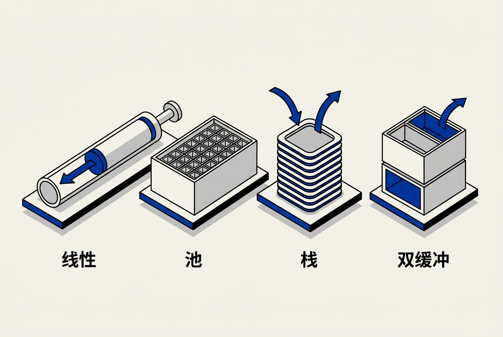

第6章：引擎支持系统 — 零基础讲义
讲义说明
本讲义基于 Jason Gregory 所著《Game Engine Architecture Volume I》第4版第6章（Engine Support Systems, p.387-438），逐节翻译推导。本章涵盖引擎的"下水道系统"——内存管理、容器、字符串等基础设施。
本版插画由 ImageGen + Guizang 材质插画标准流程生成。
学习目标
- 理解引擎子系统的启动顺序及其依赖关系
- 掌握各种自定义分配器的使用场景（线性/池/栈/双缓冲）
- 理解为什么游戏引擎需要自定义容器（而非直接用 STL）
- 掌握字符串哈希ID（StringId）的用途
- 了解引擎配置系统（CVar）的设计
6.1 子系统启动与终止
6.1.1 启动顺序
6.1.1.1 为什么顺序很重要？
引擎启动像搭积木——必须先放最底层，再逐层往上。内存管理器必须在所有系统之前初始化（因为所有系统都要分配内存）。渲染器必须在游戏逻辑之前初始化（因为游戏逻辑可能加载需要渲染的资源）。
6.1.1.2 典型启动序列
// 引擎子系统启动顺序（拓扑排序）
1. 内存管理器 ← 一切的基础
2. 数学库
3. 文件系统
4. 日志系统
5. 资源管理器
6. 渲染器
7. 物理引擎
8. 音频引擎
9. 动画系统
10. AI 系统
11. 游戏逻辑 → 启动完成！
// 关闭顺序相反：11,10,9,8,...,16.1.2 子系统依赖管理
6.1.2.1 依赖声明
每个子系统声明"我需要哪些系统在我之前启动"——系统管理器根据依赖图自动计算正确的启动和关闭顺序。这就是"拓扑排序"——你不需要手动编排顺序，只需要声明依赖。
// 依赖声明伪代码
REGISTER_SYSTEM(Renderer)
.DependsOn(ResourceManager)
.DependsOn(FileSystem)
.DependsOn(MemoryManager);
// 系统管理器自动算出：Memory→File→Resource→Renderer6.2 内存管理

6.2.1 为什么不能用 malloc/free？
6.2.1.1 通用分配器的五大问题
| 问题 | 影响 |
|---|---|
| 速度不确定 | malloc 可能触发系统调用，耗时从 50ns 到 1ms 不等——帧率抖动 |
| 内存碎片 | 长时间运行后，空闲内存被切碎，大块分配失败 |
| 无调试信息 | 不知道这次分配来自哪个系统、哪个文件 |
| 无内存统计 | 不知道"渲染器用了多少内存 vs AI 系统用了多少" |
| 不可定制 | 不能针对特定使用模式优化 |
6.2.2 四种自定义分配器
6.2.2.1 线性分配器（Stack/Linear Allocator）
模型： 像一个卷纸——一直往前用，用完一卷换新一卷。分配超快（只移动一个指针），但无法单独释放中间的对象——只能整卷重置。适合：一帧的临时数据（函数调用中的临时缓冲、渲染命令缓冲）。
class LinearAllocator {
char* buffer;
size_t capacity;
size_t offset = 0;
void* Allocate(size_t size) {
assert(offset + size <= capacity);
void* ptr = buffer + offset;
offset += size;
return ptr;
}
void Reset() { offset = 0; } // 整卷重置，极快
};6.2.2.2 池分配器（Pool Allocator）
模型： 预分配一大块内存，切成等大小的小块。分配=从空闲链表摘一个，释放=挂回空闲链表——O(1) 且无碎片。适合：大量同类型的小对象（子弹、粒子、UI元素）。
template<typename T>
class PoolAllocator {
struct Slot { union { T data; Slot* next; }; }; // 空闲时用作链表节点
Slot* freeList; // 空闲链表
T* Allocate() {
Slot* s = freeList;
freeList = s->next;
return &s->data;
}
void Free(T* obj) {
Slot* s = reinterpret_cast<Slot*>(obj);
s->next = freeList;
freeList = s;
}
};6.2.2.3 栈分配器（LIFO Allocator）
类似线性但支持"释放最后分配的"。适合：递归算法中的临时树节点。
6.2.2.4 双缓冲分配器（Double-Buffered Allocator）
两个缓冲区：当前帧用 A，下一帧开始前切换到 B（同时清空 A 给下下帧用）。适合：多线程中一帧的临时数据——渲染线程读 BufferB，逻辑线程写 BufferA，帧末尾交换——无需锁。
核心区别：池分配器零碎片、恒定时间、缓存友好。所有槽位大小相同且连续排列，CPU 缓存可以预取。malloc 需要维护复杂的空闲链表，操作时间不确定。游戏引擎中 "大量同类型对象"（子弹/粒子/敌人）是常态——池分配器是标配。
6.3 容器
6.3.1 游戏引擎的自定义容器
6.3.1.1 为什么不用 STL？
| 问题 | STL | 自定义容器 |
|---|---|---|
| 分配器 | std::allocator（全局 malloc） | 引擎自定义分配器（池/线性/带跟踪） |
| 内存开销 | 某些实现有额外开销 | 精确控制内存布局 |
| 调试 | 调试复杂（模板展开后难读） | 可附加调试信息（分配来源） |
| 性能 | 一般（通用实现） | 针对游戏使用模式优化 |
| 跨平台一致性 | 各平台实现不同 | 行为完全一致 |
6.3.2 缓存友好的容器设计
6.3.2.1 数组优于链表
// ❌ 链表：每次迭代都可能 cache miss（每个节点内存不连续）
std::list<Enemy> enemies;
for (auto& e : enemies) { e.Update(); }
// ✅ 数组：内存连续，CPU 预取有效——cache miss 率极低
std::vector<Enemy> enemies;
for (auto& e : enemies) { e.Update(); // 快 10-100 倍！}
// 为什么差这么多？
// L1 cache 延迟 1ns，RAM 延迟 100ns
// 数组：第一次访问将连续内存块加载到 cache，后续访问命中 cache（1ns）
// 链表：每个节点跳转到随机位置 → 几乎每次访问都 cache miss（100ns）6.3.3 C++17 标准容器
6.3.3.1 实际上越来越多的引擎使用 STL
随着 C++17/20 标准容器的改进（支持自定义分配器、small_vector/static_vector 提案），越来越多引擎（包括部分 Unreal 模块）开始使用标准容器+自定义分配器，而不是从头写一套。
6.4 字符串与哈希ID
6.4.1 为什么字符串在游戏引擎中是"昂贵"的？
6.4.1.1 三个问题
① 动态分配（std::string 每次赋值可能分配新内存）② 比较慢（strcmp 是 O(n)）③ 占用内存大（每个 string 都有独立缓冲区）。在游戏引擎中，字符串几乎只用于调试输出和资源路径——内部标识用更高效的方式。
6.4.2 StringId / FName 系统
6.4.2.1 核心思想：运行时用整数代替字符串
资源路径、配置名等在编译或首次加载时计算哈希，运行时只传递 32/64 位整数。字符串比较变成了整数比较（O(1) vs O(n)）。Unreal Engine 的 FName 就是这套系统的经典实现。
// StringId 的简单实现
class StringId {
static std::unordered_map<uint32_t, std::string> table;
public:
static uint32_t Intern(const char* str) {
uint32_t hash = Hash(str); // FNV-1a 或 CRC32
table[hash] = str; // 保存原始字符串（调试用）
return hash;
}
static const char* Lookup(uint32_t id) {
return table[id].c_str(); // 调试时查看原始字符串
}
};
// 使用时：字符串只出现一次（Intern时），之后全是整数比较
StringId heroPath = StringId::Intern("meshes/hero/hero_mesh.fbx");
// ... 以后所有比较操作都是整数比整数，比字符串比较快10-100倍6.4.2.2 FNV-1a 哈希
FNV-1a 是游戏引擎中最常用的哈希算法——简单（每字节一个 XOR + 乘法）、快速、碰撞率低。Gregory 在书中特别推荐。
6.5 引擎配置
6.5.1 配置系统的需求
6.5.1.1 五个关键需求
- 层次化覆盖： 默认值 → 用户配置 → 命令行参数。命令行参数的优先级最高
- 热重载： 修改配置不需要重启游戏
- 类型安全： 不能把字符串赋给整数配置
- 序列化： 能保存和加载到 JSON/INI
- 控制台可访问： 在游戏内的控制台修改
6.5.2 Unreal 的 CVar 系统
6.5.2.1 三位一体
// Unreal 风格 CVar 的声明+注册+使用
// 声明（通常在 .cpp 文件顶部）
static TAutoConsoleVariable<float> CVarPlayerSpeed(
TEXT("game.player.speed"), // 控制台名称
5.0f, // 默认值
TEXT("Player movement speed in meters per second"),
ECVF_Default // 标志位
);
// 游戏逻辑中使用
float speed = CVarPlayerSpeed.GetValueOnGameThread();
// 控制台中修改（运行时）
// > game.player.speed 10.0
// → "game.player.speed = 10.0"本章核心洞察
本章讲的是"下水道"——内存管理、容器、字符串——看似枯燥，但这些是决定一个引擎能跑多快、能撑多久的基础。一个用池分配器管理粒子的引擎 vs 一个每帧 malloc 几千次的引擎——帧率稳定性的差距可达数倍。同样的，用数组代替链表的简单决定，可能带来 10 倍的 cache 命中率提升。
三条基础准则：
1. 自定义分配器不是可选： 线性分配器用于每帧临时的滚动数据，池分配器用于大量同类对象
2. 能用数组就不要用链表： CPU 的 cache 友好度是游戏引擎的第一性能原则
3. StringId > std::string： 内部标识用整数的哈希，字符串只用于人机交互
📝 课后练习题（含答案）
① 速度不确定（malloc可能触发系统调用，慢）② 碎片化（长时间运行后空闲内存被切碎）③ 无调试信息（不知道谁分配了多少）。
线性适合每帧临时数据（渲染命令缓冲、函数内临时buffers）——因为分配极快（移动指针）、帧末整卷重置。池适合大量同类对象（子弹、粒子）——O(1)分配释放、零碎片、缓存友好。
数组内存连续 → CPU 预取有效 → cache 命中率高。链表每个节点散落在内存各处 → 几乎每次迭代都 cache miss。差距可达10-100倍。在实时性能至关重要的游戏引擎中，这是决定性因素。
将字符串哈希为32/64位整数。运行时只传递和比较整数。优势：O(1)比较（vs O(n)的strcmp）、无动态分配、内存占用极小。Unreal的FName就是这个系统。
两个缓冲区A和B。逻辑线程写A，渲染线程读B。帧末只交换指针（原子操作，<1ns）。不需要互斥锁因为两个线程永远不碰同一块缓冲区。这是"数据隔离替代数据同步"的经典设计。
🤖 qAagent 零基础问答区
想象一个停车场：有100个空位但分散在各处——你想停一辆需要连续5个空位的货车，虽然总空闲50个但找不到连续5个。这就是碎片。游戏中表现：总空闲2GB但无法分配一个连续的128MB缓冲——崩溃。池分配器通过固定大小消除碎片。
预分配你预期的最大粒子数（比如10000个）的PoolAllocator<Particle>。每帧创建粒子=从池中分配（O(1)），销毁粒子=归还到池（O(1)）。池满了就不创建新粒子（或淘汰最老的）。这比每帧 new Particle/delete Particle 快数十倍且零碎片。
- 学习目标
- 学习目标
- 6.1 子系统启动与终止
- 6.1.1 启动顺序
- 6.1.1.1 为什么顺序很重要？
- 6.1.1.2 典型启动序列
- 6.1.2 子系统依赖管理
- 6.1.2.1 依赖声明
- 6.2 内存管理
- 6.2.1 为什么不能用 malloc/free？
- 6.2.1.1 通用分配器的五大问题
- 6.2.2 四种自定义分配器
- 6.2.2.1 线性分配器（Stack/Linear Allocator）
- 6.2.2.2 池分配器（Pool Allocator）
- 6.2.2.3 栈分配器（LIFO Allocator）
- 6.2.2.4 双缓冲分配器（Double-Buffered Allocator）
- 6.3 容器
- 6.3.1 游戏引擎的自定义容器
- 6.3.1.1 为什么不用 STL？
- 6.3.2 缓存友好的容器设计
- 6.3.2.1 数组优于链表
- 6.3.3 C++17 标准容器
- 6.3.3.1 实际上越来越多的引擎使用 STL
- 6.4 字符串与哈希ID
- 6.4.1 为什么字符串在游戏引擎中是"昂贵"的？
- 6.4.1.1 三个问题
- 6.4.2 StringId / FName 系统
- 6.4.2.1 核心思想：运行时用整数代替字符串
- 6.4.2.2 FNV-1a 哈希
- 6.5 引擎配置
- 6.5.1 配置系统的需求
- 6.5.1.1 五个关键需求
- 6.5.2 Unreal 的 CVar 系统
- 6.5.2.1 三位一体
- 本章核心洞察
- 📝 课后练习题（含答案）
- 🤖 qAagent 零基础问答区